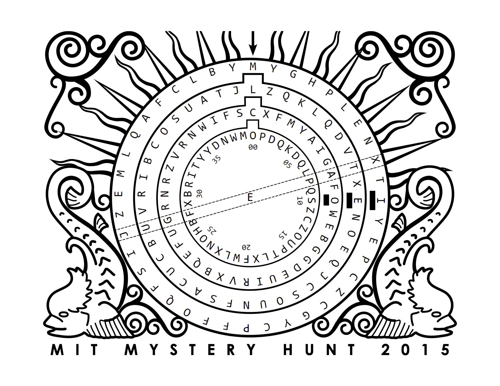

Once you have solved the mystery of the locks, call it in here.
You receive a treasure chest shut tightly using a chain with four locks. You pick one of the locks using a hairpin and a paperclip, and you manage to get the chain off the chest. You slowly open the lid -- inside are all the other puzzles in this round! Your team grabs all of the puzzles in the chest and happily runs off to solve them, leaving you with the locks, the chain, and the treasure chest itself.
You look back at the lock you just picked, and you see a scrap of paper attached to the part of the shackle which had been hidden. It says:
2-R05
You use a shim made out of a soda can to open another of the locks, revealing a scrap of paper that says:
1-L36
You use a skeleton key you've been carrying around for a while to open the third, revealing:
3-L20
You carefully manipulate the fourth lock, and you realize you can suss out the combination by rotating the dials slowly applying a gentle pressure. The combo is:
4 R09
You look back at the treasure chest. There's an inscription on the lid:
